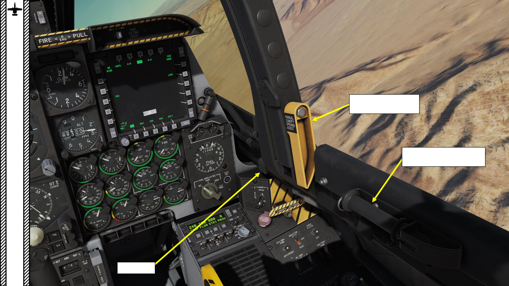

<div id="pf24" class="pf w0 h0" data-page-no="24"><div class="pc pc24 w0 h0"><div class="c x0 y0 w1 h0"><div class="t m0 x10 h1 y1 ff1 fs0 fc0 sc0 ls2 ws0">36</div><div class="t m1 x8 h9 y36 ff8 fs7 fc1 sc0 ls0 ws0">PART 3 </div><div class="t m1 x8 h9 y48 ff9 fs7 fc1 sc0 ls0 ws0">–<span class="_ _13"> </span><span class="ff8">COCKPIT &amp; GAUGES</span></div><div class="t m1 x9 ha y38 ff8 fs0 fc1 sc0 ls0 ws0">A-10C </div><div class="t m1 xa hb y38 ff8 fs5 fc1 sc0 ls0 ws0">WARTHOG</div><div class="t m0 x1d h8 y151 ff7 fs0 fc1 sc0 ls0 ws0">Manual Canopy </div><div class="t m0 x1d hc y152 ff7 fs5 fc1 sc0 ls0 ws0">Opening Assist Ha<span class="_ _0"></span>ndle</div><div class="t m0 x96 hc y153 ff7 fs5 fc1 sc0 ls0 ws0">Canopy Break<span class="_ _6"></span>er T<span class="_ _1"></span>ool (used </div><div class="t m0 x96 h8 y154 ff7 fs0 fc1 sc0 ls0 ws0">to sha<span class="_ _0"></span>tter c<span class="_ _0"></span>anopy glass)</div><div class="t m0 x97 h8 y155 ff7 fs0 fc1 sc0 ls0 ws0">Flood Light</div></div></div><div class="pi" data-data='{"ctm":[1.000000,0.000000,0.000000,1.000000,0.000000,0.000000]}'></div></div>
